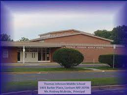

I went to Thomas Johnson Middle School in Prince Georges County. The school had a developing STEM curriculum that got me interested in engineering. We built many things in our technogolgy class from an underwater pvc drone to motor controlled ground vehicles.

The school had after school STEM clubs that allowed us to further our interests. I joined a club that worked to create a prosthetic arm out of reusable materials. We spent 1-2 months creating the arm and then competed at county and state levels. This started my interest in robotics.
Links to Images
- https://daisyrayela.wixsite.com/tjms-stem-program
- https://dci.bcps.org/department/academics/science__health___physical_education/science_pre_k-12/maryland_m_e_s_a_program